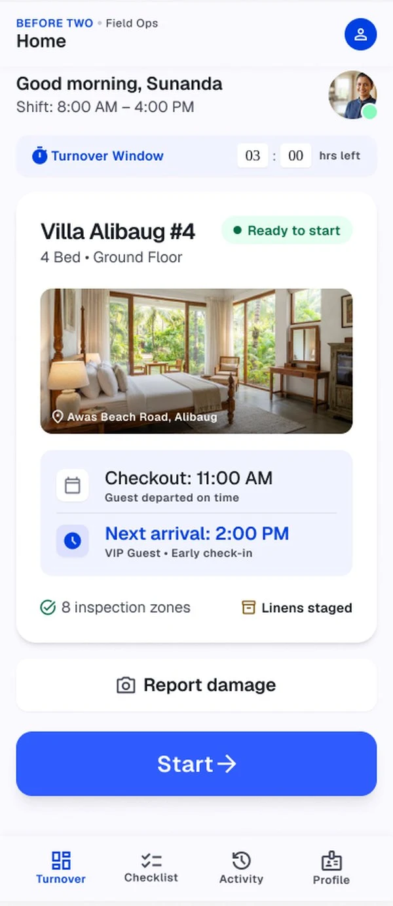
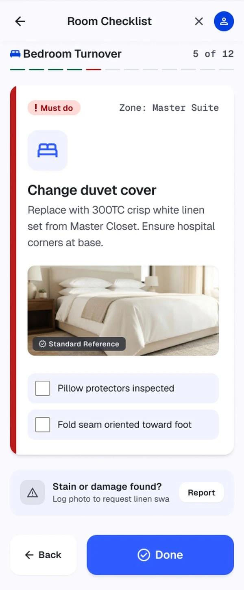
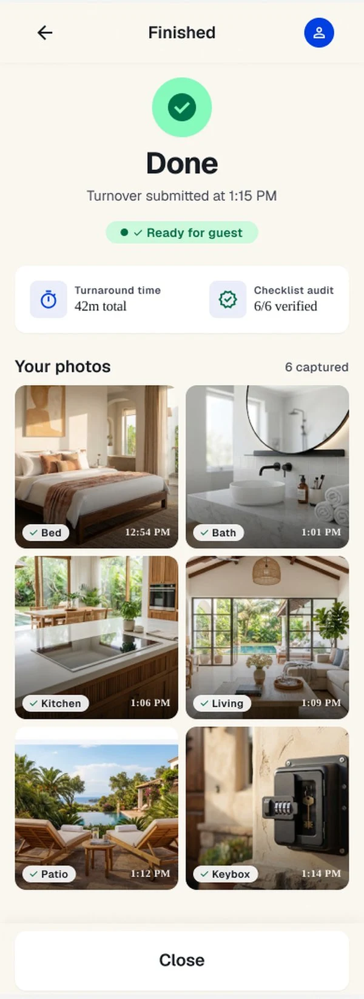
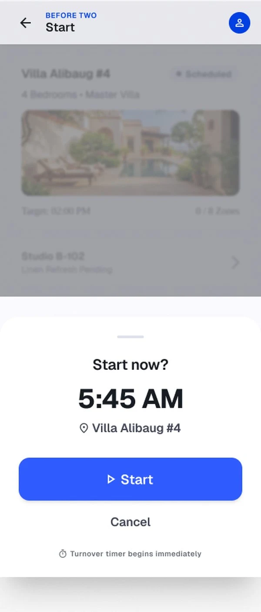
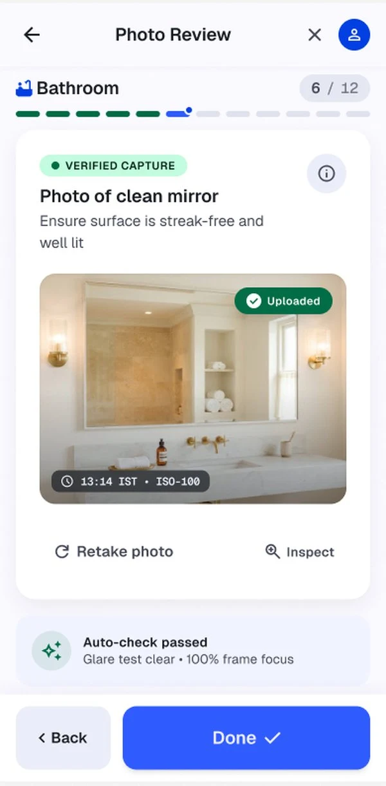
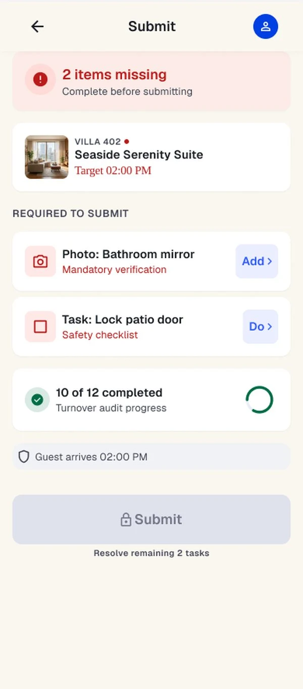
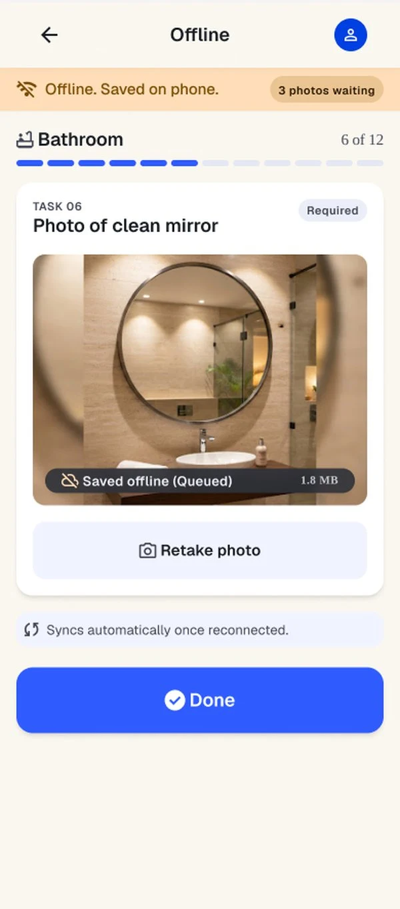
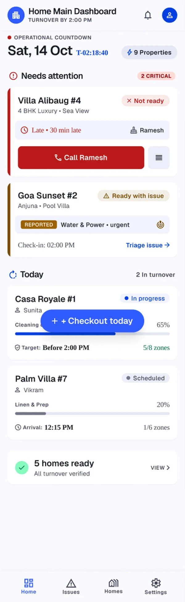
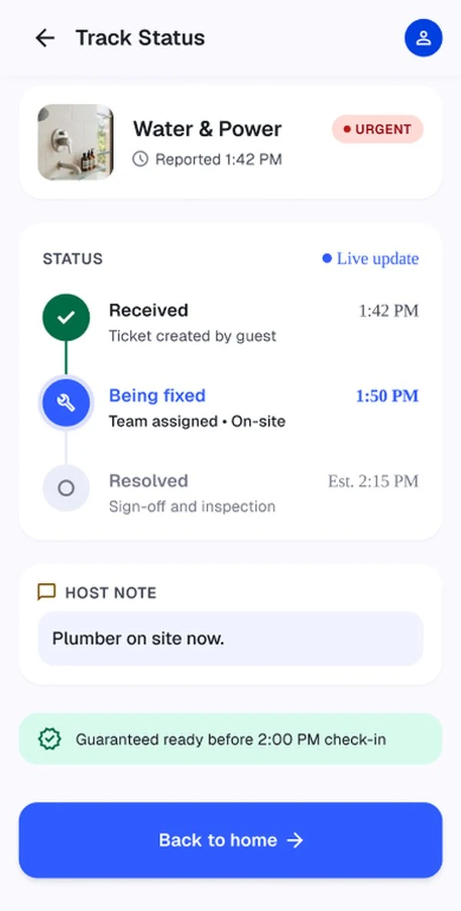
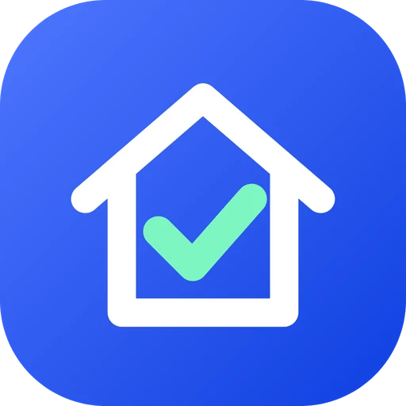

A checklist that proves the villa is ready
Housekeepers follow a checklist and capture photo proof. Hosts see readiness on one dashboard. Guests report issues with a QR code, no app needed. All before the 2:00 PM check-in.



Overview
Between checkout and check-in
Short-stay villas are cleaned in a few hours, between one guest leaving and the next arriving. The host often cannot be there, so "it's done" is only a message.
Before Two turns that message into proof: a guided checklist, photos captured inside the task, and a host dashboard that shows what is ready.
Challenge
One hand, one clear next step
The housekeeper is in a hurry, often on a patchy connection. Every screen needed one obvious action, familiar patterns and no long list to face.
I grouped twelve items into zones, marked must-do items in red, and blocked Submit with a plain list of what is missing.




Three sides
One system, three people
The housekeeper cleans and proves. The host sees every home against a 2:00 PM countdown and handles issues. The guest scans a QR code in the villa to report a problem, with no sign-in.



Brand
A shape logo with a check
A rounded app tile holds a house and a check mark: the property, and proof that it is ready. The palette is app blue with mint for "verified".

Inter Tight for the wordmark, one blue action colour, mint and green only where something is verified.
Status
Designed, now being built
The 56 screens cover the housekeeper checklist and photo proof, the host's setup, dashboard and issue desk, and the guest's QR-code report flow, plus the exceptions: offline, expired links and too many tries. Development is in progress.
It has not been tested with real users yet. Walkthroughs with housekeepers, hosts and guests, then a one-property pilot, are planned.